对于个人而言，在游戏开发的过程中，最缺的可能就是游戏素材了，素材的获取途径是多样的，但往往我们都是在某个游戏之中发现某个想要的素材，所以游戏解包成了我们需要的技能之一，如今大部分手游的开发引擎都是Unity(对apk拆包就可以在lib下发现libunity.so)。“知己知彼，百战不殆”，所以在拆包前，我们需要从整体上认识Unity的架构，虽然Unity对免费用户并不开源，但许多类似的思想是不会改变的，不会影响我们的理解。
从开发的视角看Unity
UnityHub是一个没用的玩意，不用管它，我们重点来研究UnityEditor。Unity对我来说是一个闭源项目，所以要想研究Unity，只能从官方文档和工程目录开始研究。
官方文档
Unity的文档总共有两部分，用户手册和脚本API，前者是基本属于整个UnityEditor软件的操作手册，后者则是脚本开发的API查询手册，虽然其并没有告诉我们Unity的架构，但我们可以以此作为依据了解个一二。一般的游戏引擎由软件库加头文件组成，比如我们的cocos2dx，这类引擎使用起来和一般的第三方库区别不大，但这种开发方式存在开发语言的依赖性，比如跨平台的库基本都是用C/C++写的。在我使用的Unity2020里面，只有唯一的脚本语言C#，又由于Unity的跨平台性，我们有理由猜测Unity是运行在mono上的，事实也确实如此。mono是一个开源的C#运行环境，通过对Unity程序的考察，大致可以猜出Unity的底层API基本都是C/C++写成，再通过mono(可以看成一个C/C++库)得到在C#的接口，这是Unity的核心部分。至于UnityEditor则是一种辅助进行可视化开发的工具，或者说这是Unity的核心竞争力之一，深入搞过Unity的应该都知道C#脚本拥有极大的控制权，甚至是UnityEditor的界面。
工程目录
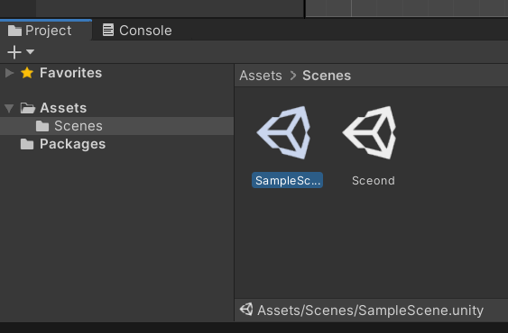
我们直接从软件内部来看工程，是因为重要的操作部分已经被显示了出来，实际的工程目录应该长这样
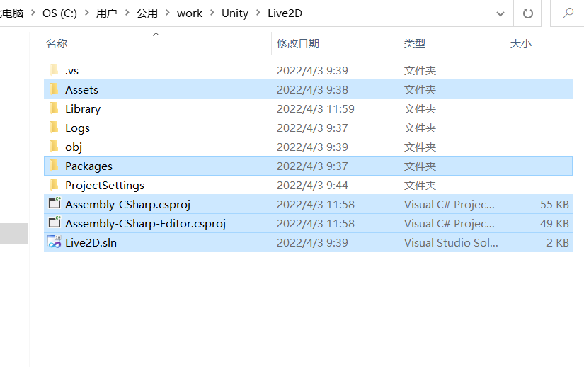
大部分是配置相关，在Editor内也可以完成操作，所以作用不大，值得关注的是里面的VisualStudio工程文件sln和csproj。它实际是Unity脚本编写的核心配置文件，虽然与编译相关，但并非用于编译，编译的核心工具链在UnityEditor安装目录下，更常见的情况是依据不同平台直接使用外部的SDK。Assembly-CSharp主要管理与我们游戏相关的脚本，Assembly-CSharp-Editor管理与我们编辑器相关的脚本，后者的报错是不会影响游戏的生成，因为它就相当于Unity的插件一样，顶多插件导入失败。Packages即外置包，相当于我们平时开发使用的第三方库，Unity是面向资源(一种比喻)的开发，包就相当于资源的打包，实际就是在Unity商店里下载的unitypackage，区别在于使用unitypackage导入会让它确实的在这里，而packages里则是一种引用，要在PackagesManager里进行管理
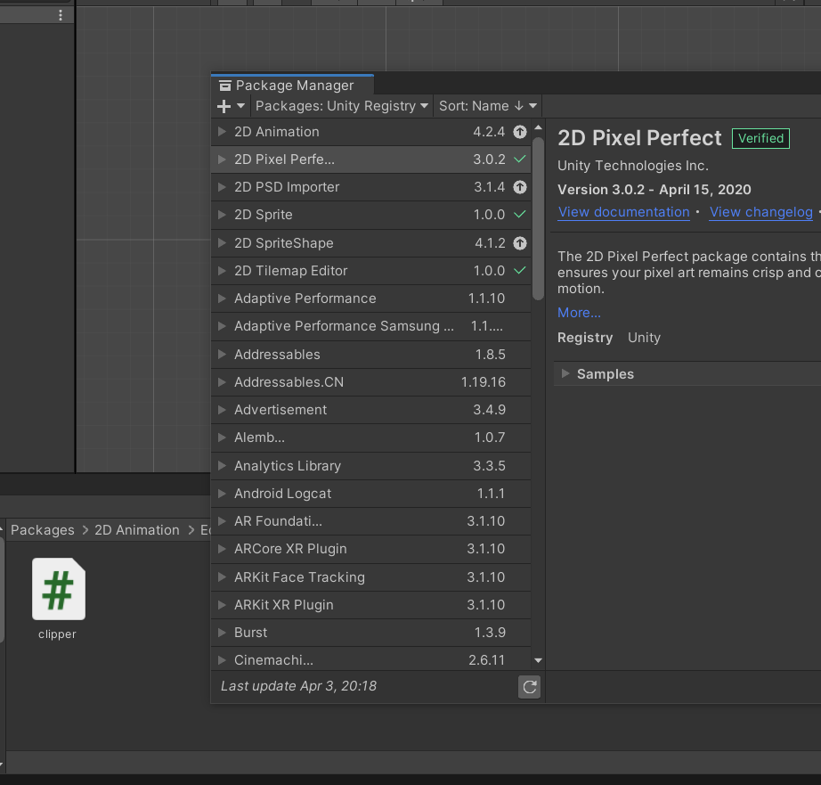
至于包的内容就是Assets目录下的内容，可以是各种Unity型的文件，不仅可以对游戏进行各种控制，还能控制整个编辑器
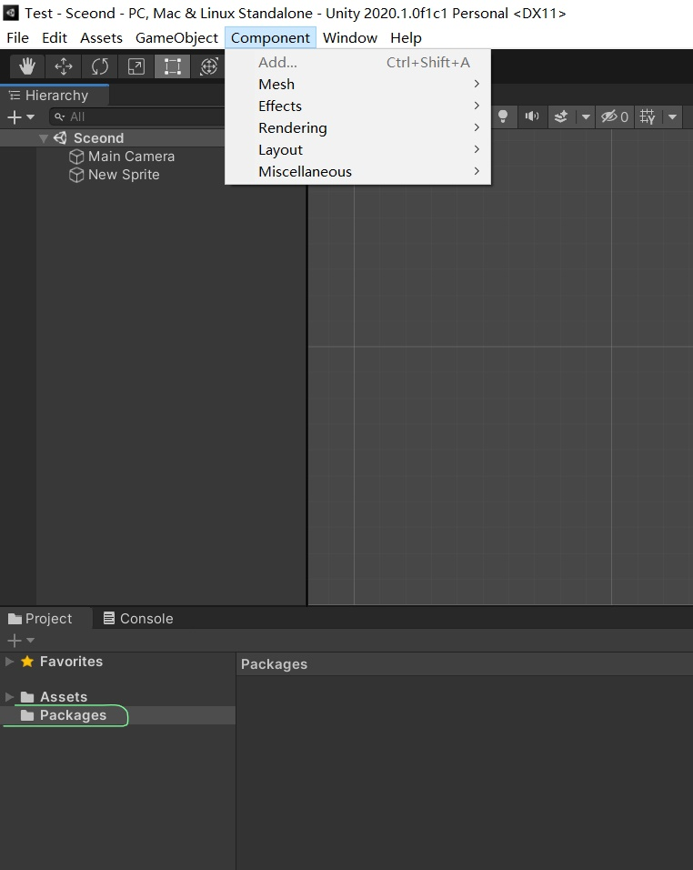
导入相应包后
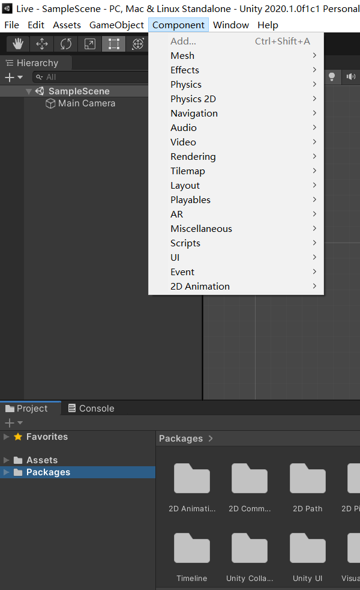
显然unity的功能变多了。
Unity开发理念
这是我自己的理解，Unity应该属于面向资源的开发，资源是对所有Unity型与一般资源的总称，一般资源如图片的png等没什么好说的，我们主要来研究Unity型资源。
.unity是场景(Scene)文件，实际就是记录整个页面信息的文件，可以用文本编辑器打开看到里面的内容，而UnityEditor就是以场景作为编辑器的一次打开单位，实时渲染当前的场景
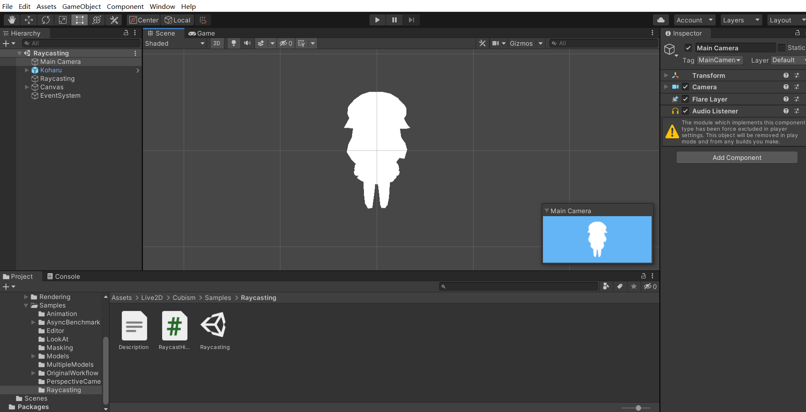
与基本所有引擎一样，场景的组织实体的方式也是树，根节点是当前的场景，内部的实体都是GameObject，其中蓝色的代表Prefab，即一种可以反复利用的实体。对于每个GameObject可以通过右边的Inspector看到它的Component，一个实体由多个Component组成，最基本的Component是Transform，表示实体的位置、旋转和缩放。这是一种游戏资源的组织方式，正是不同的Component组成才表明了这个GameObject与其它的是不同的。在Unity中，添加GameObject有很多类型，但实际都是一样的，只是组织了不同的预设Component。想要了解游戏引擎的基础内容，我推荐这个，搜索这个作者可以找到他一步步构建这个引擎的过程，使用的是OpenGL，十分适合想要了解底层原理的人。
.cs是开发的脚本文件，整个引擎最重要的部分之一，没有脚本的程序是没有生命力的，有脚本进行逻辑控制，游戏才能称之为游戏，但脚本的生命周期应该才是我们最应该关心的东西
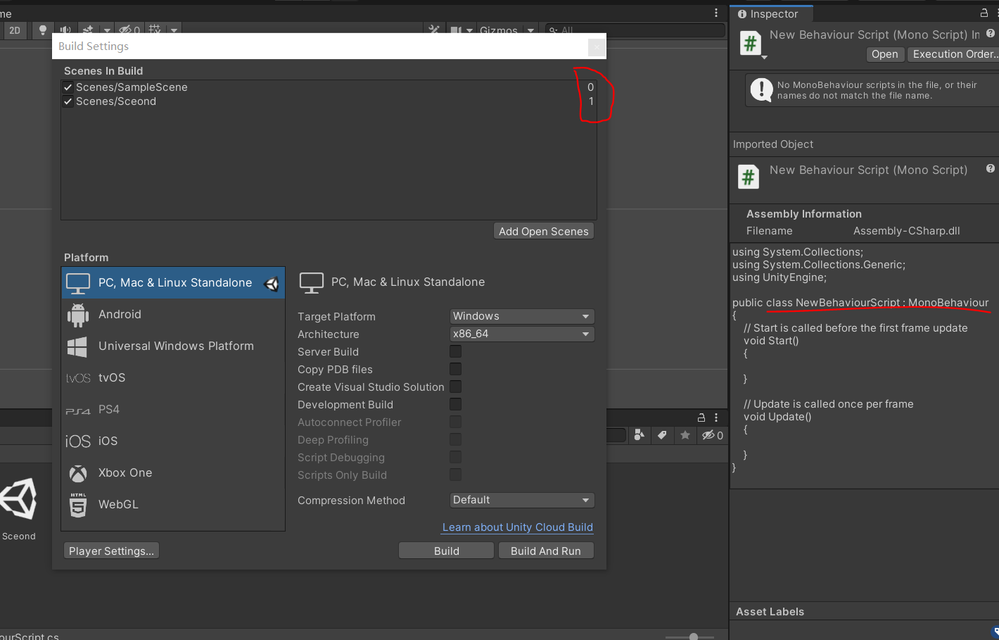
在进行编译的时候，基本单位是Scene，最右边表示Scene的标号，游戏启动的时候会最先加载编号为0的场景，场景切换需要使用脚本，可视化界面基本找不到完成的方案。脚本最基本的用法是，挂载到GameObject上
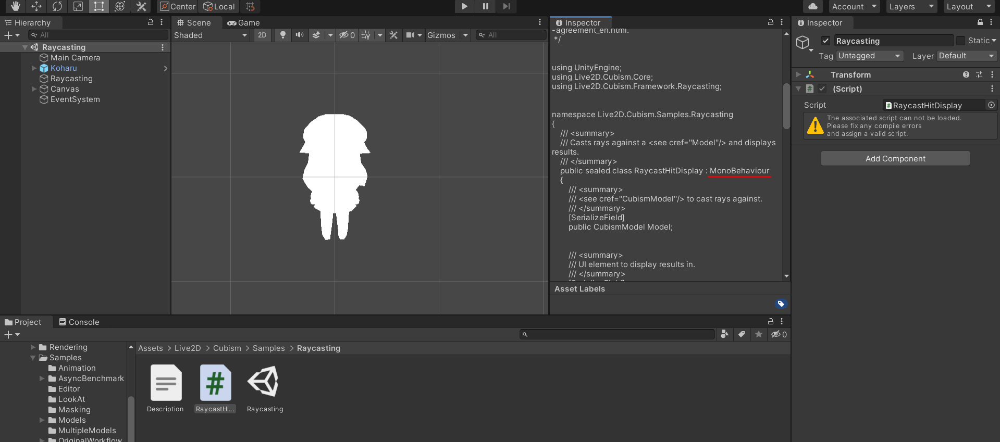
从中我们可以看到，脚本通过Script这个Component挂载到实体上，但脚本必须是MonoBehaviour的子类(不挂载，做为引用的话自然就无所谓了)，而这个类的正好就给出了整个脚本的生命周期，看看官方文档
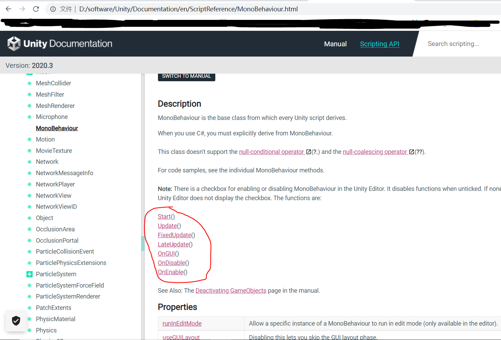
比如OnStart是脚本第一次被唤醒是执行的方法，OnUpdate则是每帧执行一次的方法等
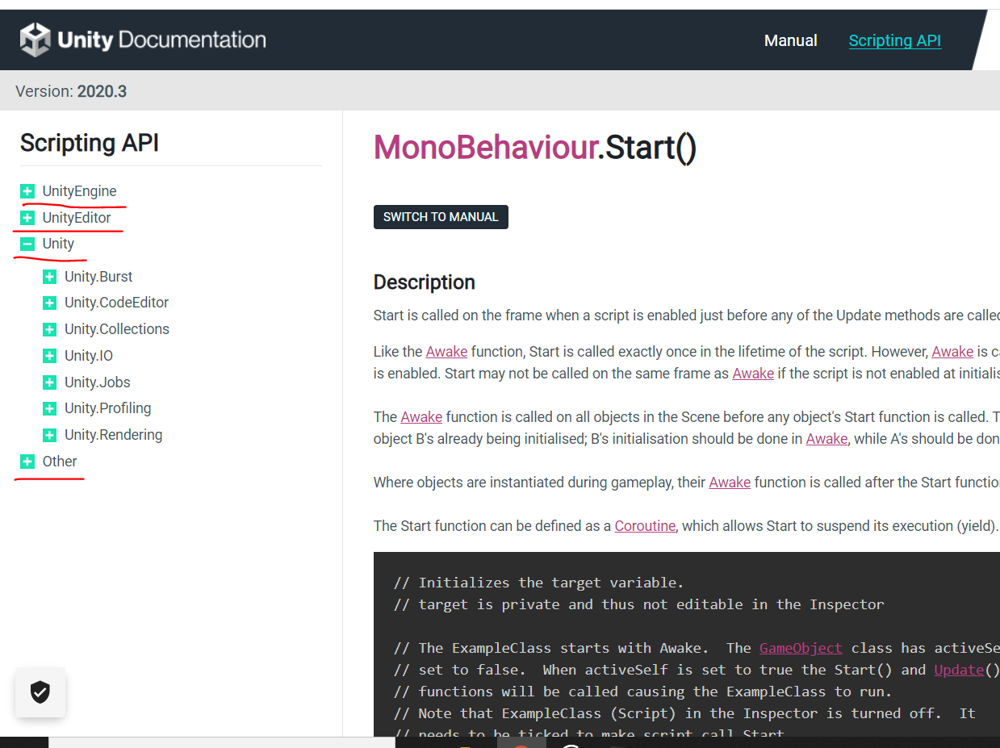
Unity脚本的库看似有4个，实际常使用的只要两个，UnityEngine和UnityEditor，前者是游戏开发使用的库，后者是对编辑器的改造，主要用于开发插件，Unity里的都是渲染相关的理念如Jobs等，它与Other基本就没怎么用过，根本就没空去了解它们。
除了以上两个，其它资源都没什么好说的，如.shader表示着色器，.anim表示动画等，讨论它们如同讨论图片的各种格式一样，都只是资源的在Unity里的表现形式，都可以嵌入GameObject中罢了。
从用户的视角看Unity
Unity的编译配置挺复杂的，但经过多次实验，编译后文件的差距都不会太大，包括Unity2018平台(大多游戏都是这个版本)，区别较大的是mono脚本编译和il2cpp编译(我们后面讲，接下来都以mono为例)
Windows
在Windows平台下，我们可以得到以下这些文件(选中的)
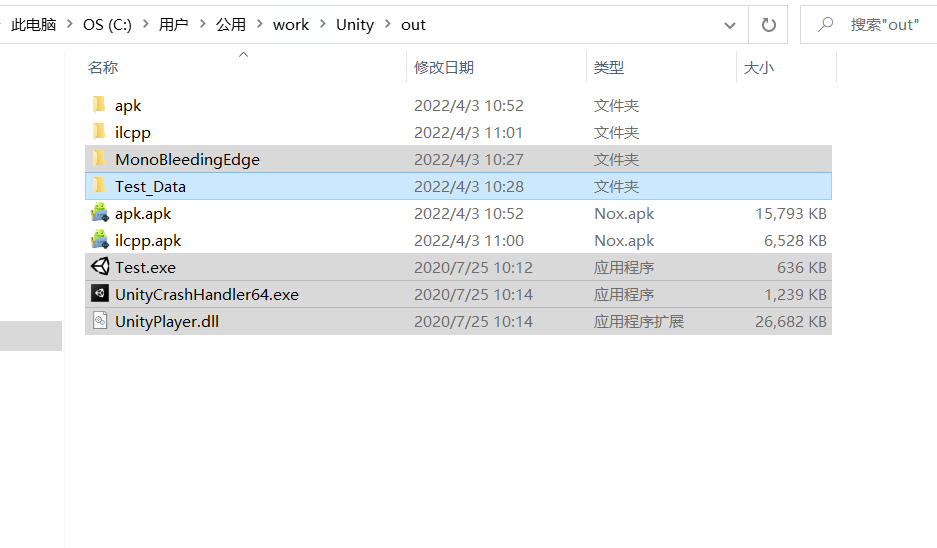
exe是我们的主程序，UnityPlayer.dll则是我们引擎的主要运行库，MonoBleedingEdge包含了mono运行的dll和相关的配置，这些基本都是我们无法控制的固定文件，Unity是面向“资源”的开发，我们的目的是找到这些“资源”，进入“_Data”，我们有
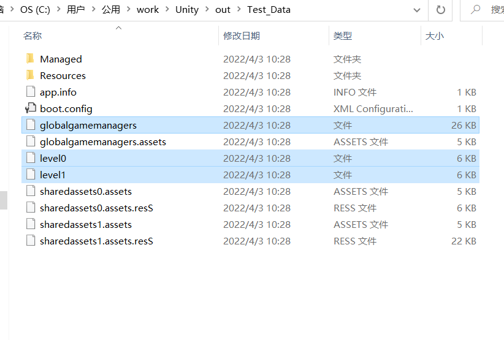
Managed存储了一系列的dll动态库文件，但你会发现Android版的也会有这些，这里就不得不提一下mono了，你可能会说后缀名代表不了什么，但对两种dll进行16进制分析
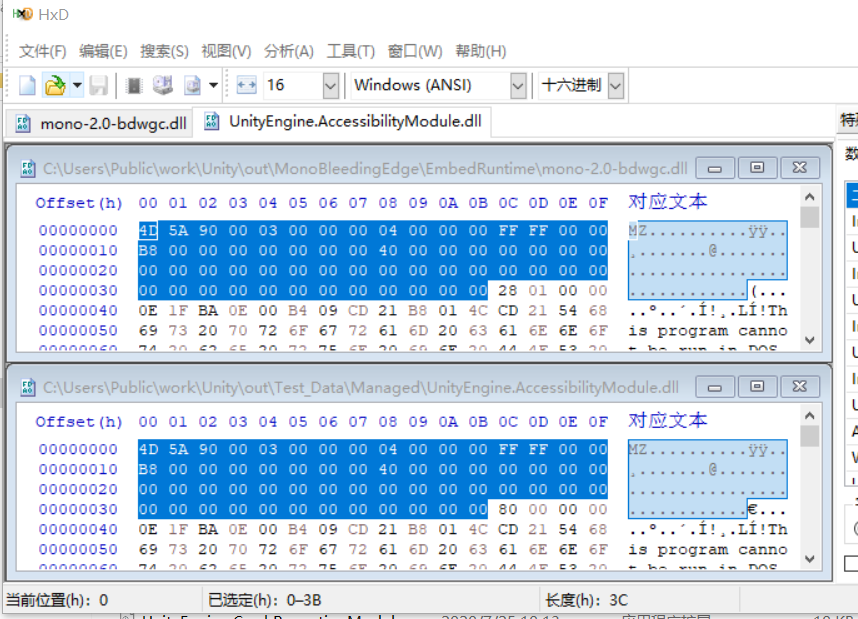
可以看到文件头是基本一致的，这足以说明它们是同一类的二进制文件。玩过linux的可能知道，mono在linux上可以作为window运行工具，不过是有限制的，只有在.net平台下开发的程序才有效，所以更多的时候用的都是wine。mono实际上就是一个模拟.net框架的东西，将它称为C#的开发工具并不合适，mono编译的结果与.net是一样的，mono真正的意义是模拟.net，使得.net可以存在于多个平台上。我们所见的这些在Managed中以UnityEngine开头的dll就是Unity的C#接口所对应的动态库，所以对于不需要的库，随手删掉也不会影响程序的运行，不过内存也不大，删不删也无所谓了
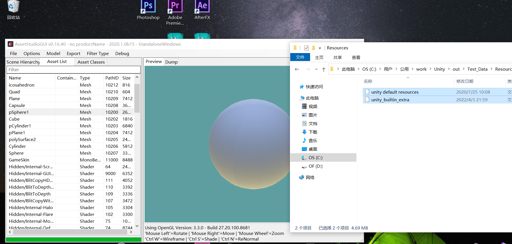
Resources并不是asset，存储的都是Unity系统自带的资源，属于不可控的部分，在Data下真正与我们开发Assets相关的，可以控制的其实只有globalgamemanagers和level，前者是资源打包，后者是我们的场景
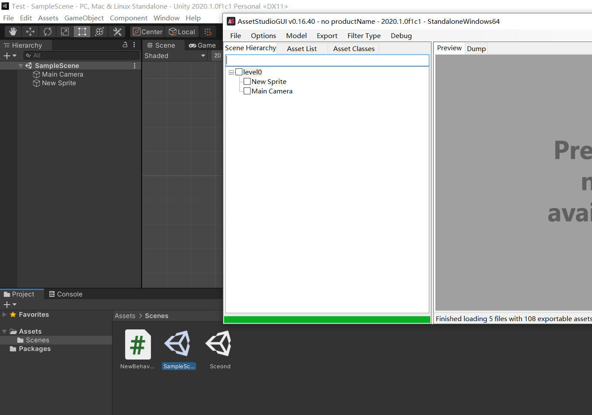
我们打开Level0即场景SampleScene，发现它们的结构是一模一样的，排除系统的资源，我们还能找到我们的脚本文件
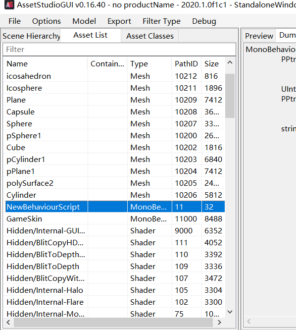
从整体上来看，真正需要解包的东西看样子并不多嘛？
android
以笔者现有的物质基础，只能再看一个安卓了
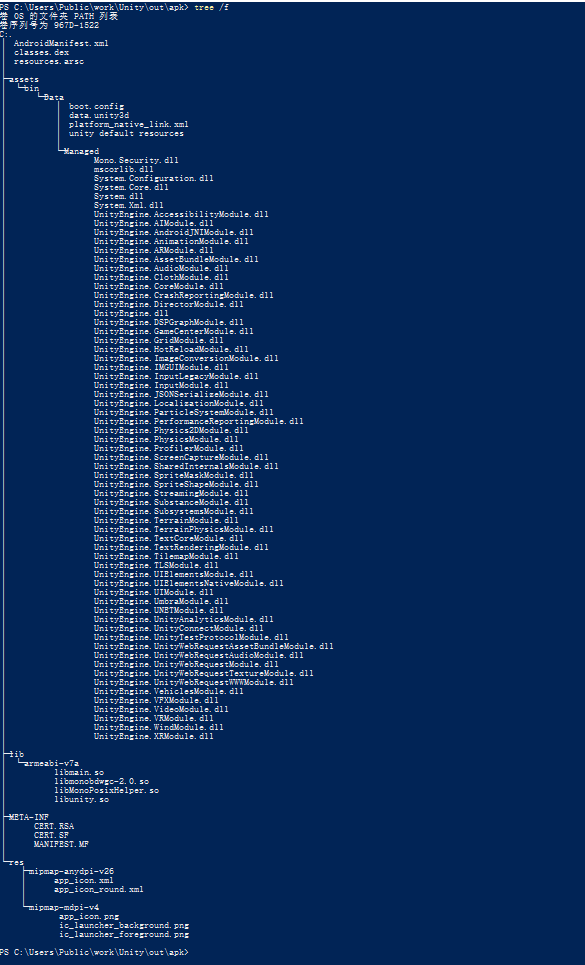
一个中规中矩的安卓程序，如我们之前所说在Managed下确实有一系列的dll，作为mono环境下的unity库。在lib库下，与windows时一样有两个mono库，作为C#环境，libunity.so是引擎库，而main.so是程序的入口，通过对apk的反编译分析
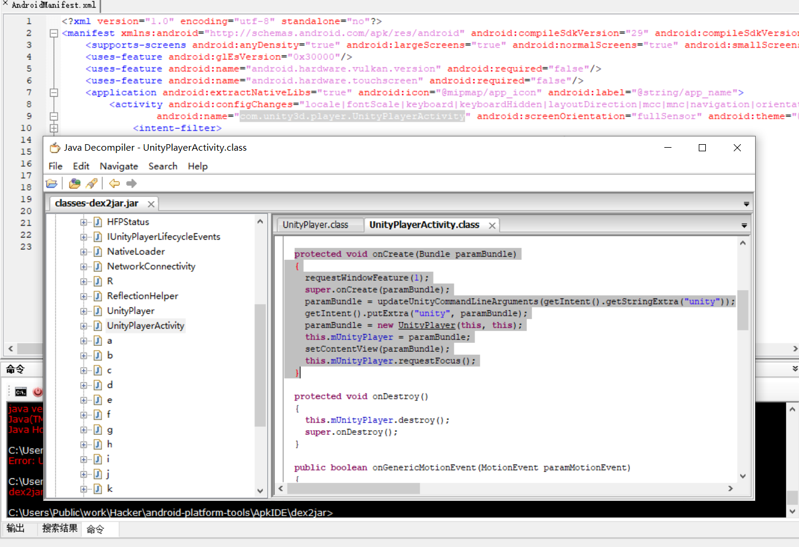
再反向分析so文件
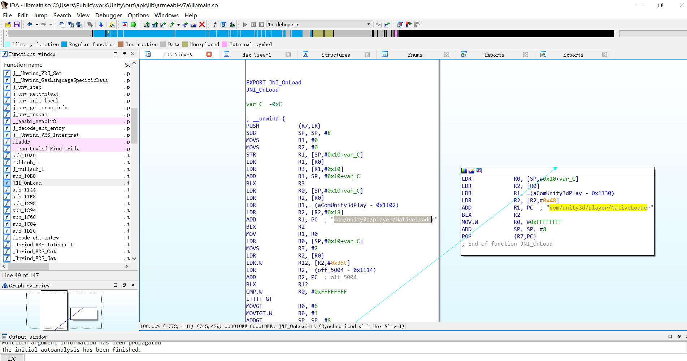
综合来看，main.so就是起到了入口作用的C/C++程序，类似exe文件？安卓属于嵌入式系统，有一套比较复杂的程序管理系统，mainifest用于声明文件的配置，其实如果要用C/C++作为入口的话，应该可以使用NativeActivity，但很多引擎都不会这么做，包括cocos2d，其实原因不太复杂，很多API在java层才有，主要是framework下的东西，比如安卓桌面就是运行在java层下的
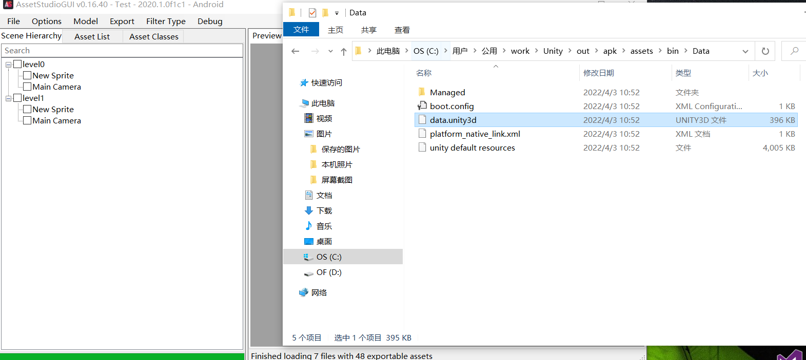
比较不同的是，在安卓下资源全都打包到了.unity3d下，但实际也不复杂，它把所有的场景都包含了进去，至于为什么两个系统有两种存储方式，我不知道，也不重要。
Unity的常用工具
以上都是比较理想而简单的情况，实际开发中往往会加入各种东西，使工程变得十分的复杂，而且大多商业使用的公司基本都会有unity的源码，可以进行各种修改，或加入其它的库，分析会变得无比艰巨。但我们应该想起自己的目的——资源的解包，多于无关的东西就可以无需花费精力去研究了，我们来看一看最常用的两个辅助工具，AssetBundle和Il2cpp，它们代表了Unity最重要的两部分内容。
AssetBundle
AssetBundle主要用于资源的打包压缩，有助于资源的管理和热更新，开发中的使用可以参考官方处，基于我们的目的，我们主要看一看它到底对输出程序产生了什么影响，拿一个常见的游戏为例
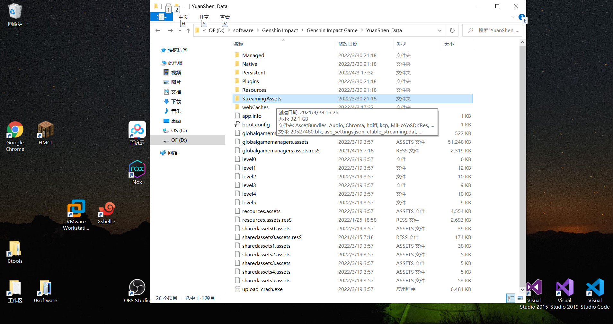
这里面的成分比较复杂，有许多外置的东西，我们肯定实验不出来，但我们发现了一个内存的大头StreamingAssets，它包含了几乎整个游戏的内存，这个实际就是使用AssetBundle后的资源存放文件，但在大多游戏里文件夹其实叫做AssetBundle，名字不是很重要，重要的是内容，由于这个游戏比较复杂，我们挑一个其它“受害者”
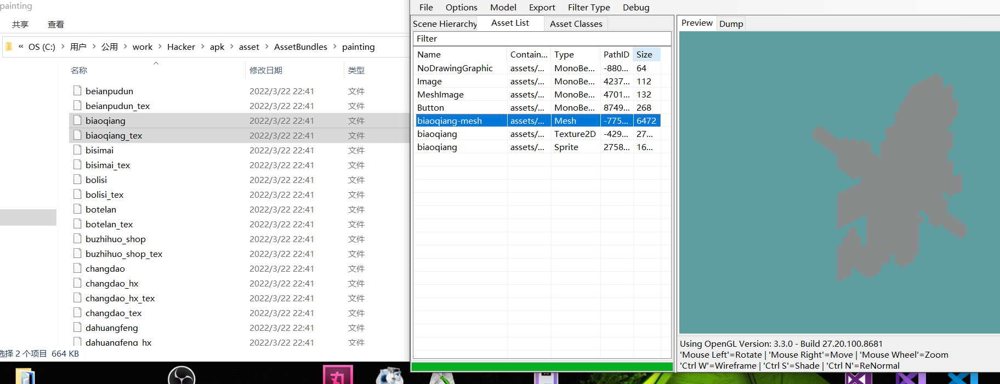
实际开发中的资源是大量的，按照传统的方式资源将全挤在一个文件内，从读取效率上来看是十分慢的，AssetBundle一个显著的作用就是将资源实现在封包中的分散，这样就可以通过文件系统的快速索引来读取资源，效率大大提高。分散存储还有一个好处就是可以进行部分更新，可以在本地记录一个资源的版本号，与服务器最新版本号进行比对修改，可以不更改旧资源情况下，更新添加新资源，机制有点类似于git，这样还可以有效地实现资源的热更新。总之它的作用就这样，也不是很复杂。
Il2cpp
Il2cpp是不同于mono的一种对C#脚本的处理方式，在程序编译的时候可以进行选择
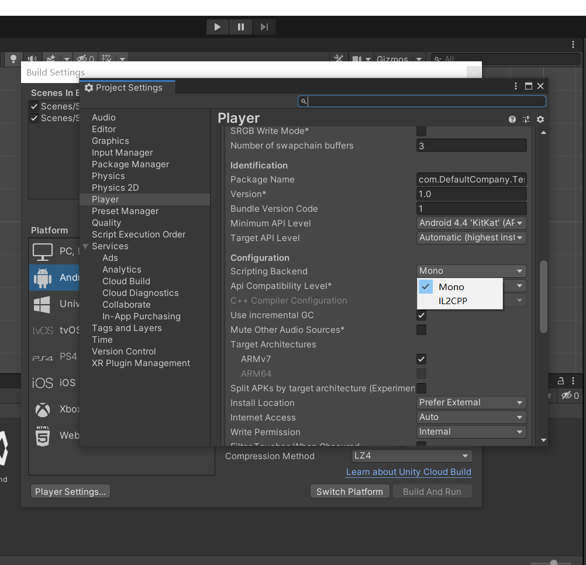
这里是官方的介绍，Il2cpp的作用就是将C#代码转化为不依赖虚拟机的运行更加高效的cpp代码，以下是原来mono下脚本的运行架构
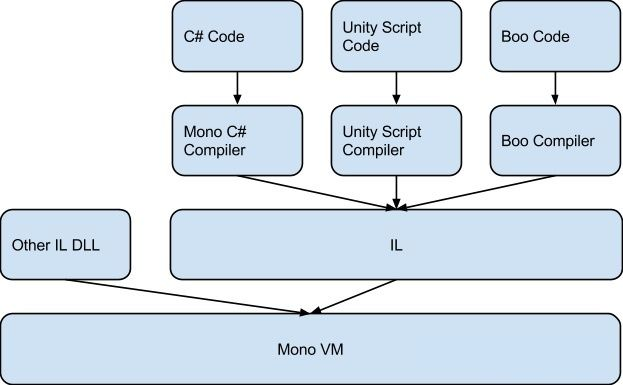
使用Il2cpp后的架构如下
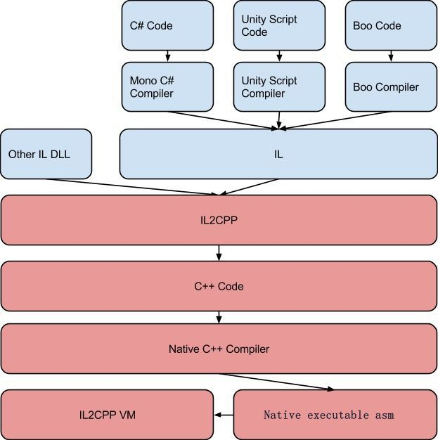
目前只在手游中发现这种方案，对于windows系统来说.net的代码可能本身比较原生，运行效率也不一定就低。而在输出程序上
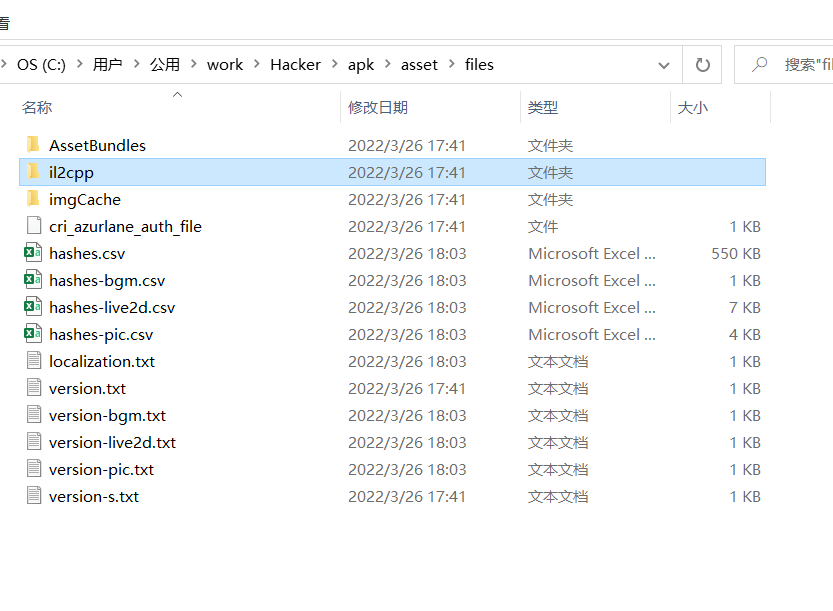
多了一个il2cpp文件夹，但其实它只保存了配置文件，在Managed下的C#库dll文件也没有了，取而代之的是在lib下
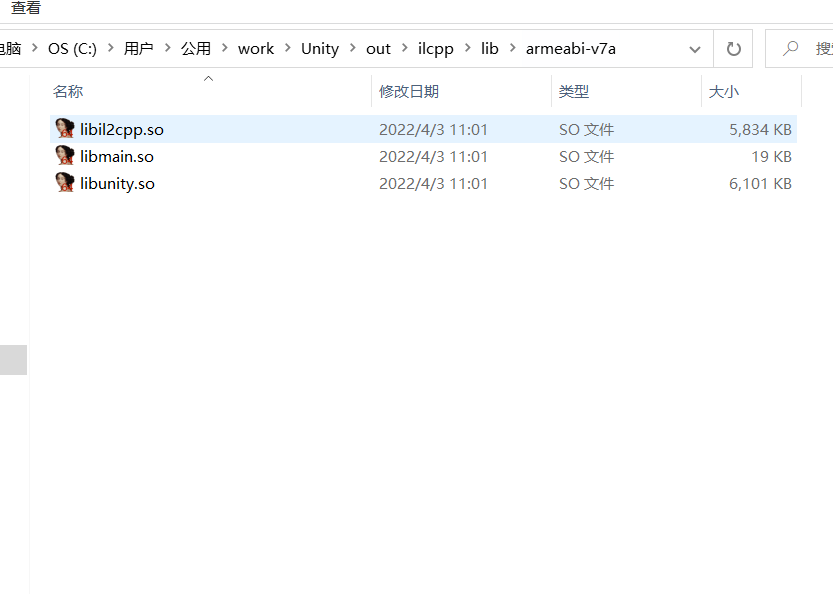
少了mono的库，多了一个libil2cpp，但注意它不是运行库，而是我们从C#转化的cpp编译生成的原生代码。不过嘛！代码与我们目标的资源关系不大，就不过多研究了。
对Unity的了解应该足够深入了吧？